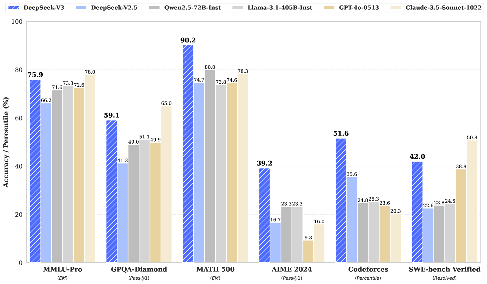
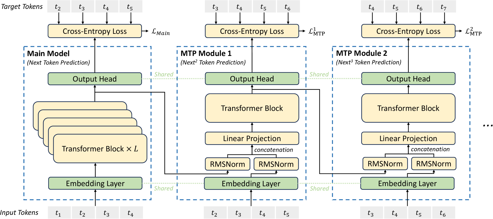
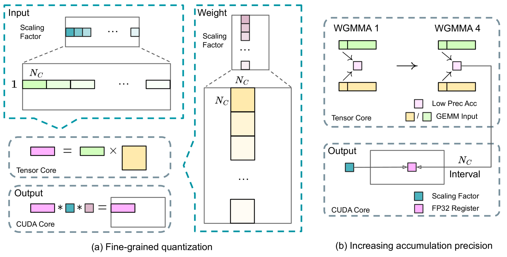

⚡ TL;DR — 30 秒看懂
它做了什么：DeepSeek-V3 是一个 671B 总参数 / 每 token 激活 37B 的混合专家（MoE）大模型，在 14.8 万亿 token 上预训练，性能超越所有开源模型，并在多数基准上比肩 GPT-4o、Claude-3.5-Sonnet 等闭源旗舰。
为什么重要：全程训练只花了 2.788M H800 GPU 小时（约 557.6 万美元），且训练全程没有一次不可恢复的 loss 突刺、没有回滚。这把「开源也能低成本逼近闭源」从口号变成了可复现的工程事实。
怎么做到的：四个支柱——MLA 压缩 KV cache 让推理更省、DeepSeekMoE + 无辅助损失负载均衡避免为了均衡牺牲性能、多 token 预测（MTP）加密训练信号、FP8 混合精度 + DualPipe 把通信藏进计算、把算力榨干。

- 横轴是基准、纵轴是分数：每组柱子对比 DeepSeek-V3 与 Qwen2.5-72B、Llama-3.1-405B 等开源模型，以及 GPT-4o、Claude-3.5-Sonnet 等闭源模型。
- DeepSeek-V3（最深色柱）整体领先开源阵营：在 MMLU-Pro、GPQA、MATH-500、Codeforces、AIME 等硬核基准上明显高出其他开源模型一截。
- 逼近闭源旗舰：在数学、代码类任务上甚至追平或超过 GPT-4o / Claude-3.5-Sonnet，在英文事实知识（SimpleQA）上仍略逊于闭源。
- 这张图是全文的「结论先行」：作者先把成绩单摆出来，再用后面的章节解释「为什么花这么少的钱能做到」。
01 问题：开源如何低成本追平闭源
这篇报告要解决的不是「单一算法」，而是一个系统级难题：在算力预算有限的前提下，把开源模型做到闭源旗舰的水平。
近两年闭源模型（GPT-4o、Claude-3.5、Gemini）一路狂奔，开源阵营（LLaMA、Qwen、Mistral、DeepSeek）拼命追赶。要继续往上顶，最直接的办法是把模型做大——但「做大」会立刻撞上三堵墙：
- 推理成本墙：标准多头注意力（MHA）的 KV cache 随序列和层数线性膨胀，长上下文推理时显存吃紧、吞吐受限。
- 负载均衡墙：MoE 用稀疏专家省算力，但专家负载一旦不均就会「路由坍缩」；传统解法是加 auxiliary loss 强制均衡，而这个损失项越大、模型性能掉得越多。
- 训练成本墙：超大模型用 BF16/FP16 训练，显存与算力开销巨大；跨节点 MoE 的 all-to-all 通信又会把 GPU 闲置成「等数据」的状态。
DeepSeek-V3 的回答是：不靠单点突破，而是把架构、训练框架、硬件特性三者协同设计，逐一拆掉这三堵墙。下面按「先架构、后工程」的顺序展开。
02 架构总览：MLA + DeepSeekMoE
DeepSeek-V3 仍是标准 Transformer 框架，但在两个关键位置做了替换：注意力换成 MLA，FFN 换成 DeepSeekMoE。这套组合已在 DeepSeek-V2 验证过，V3 在其上新增了「无辅助损失负载均衡」和「多 token 预测」。

- 整体是一摞 Transformer Block：每层由「注意力子层（MLA）+ 前馈子层（DeepSeekMoE）」组成，配 RMSNorm 和残差连接。全模型共 61 层、隐藏维度 7168。
- 左侧 MLA：输入先经「下投影」压成一个低维潜在向量 c_KV，推理时只缓存这个压缩后的潜在向量（图中蓝框），再上投影还原出多头的 Key/Value。这就是 KV cache 大幅缩小的来源。
- RoPE 解耦：位置编码（RoPE）走单独一支「解耦的 query/key」，与压缩通路分开，避免压缩破坏位置信息。
- 右侧 DeepSeekMoE：FFN 被替换成「1 个共享专家 + 256 个路由专家」，每个 token 只激活其中 8 个路由专家 + 共享专家。Router 用 sigmoid 算 token-专家亲和度并取 top-K。
- 稀疏激活：虽然总参数 671B，但每个 token 实际只过一小撮专家，所以激活参数只有 37B——这就是「大而省」的关键。
▶ 模型关键配置 · 61 层 / 7168 维 / 256 路由专家 / 激活 37B（点开看完整表）
| 配置项 | 数值 |
|---|---|
| 总参数 / 每 token 激活参数 | 671B / 37B |
| Transformer 层数 | 61 |
| 隐藏维度 | 7168 |
| 注意力头数 / 每头维度 | 128 / 128 |
| MoE：共享专家 / 路由专家 | 1 / 256 |
| 每 token 激活路由专家 | 8 |
| 前 3 层为 Dense，其余为 MoE | 3 + 58 |
| MTP 预测深度 D | 1 |
| 预训练 token 总量 | 14.8T |
| 词表（Byte-level BPE） | 128K |
| 上下文长度（两阶段扩展） | 4K → 32K → 128K |
03 MLA：把 KV cache 压下去
多头潜在注意力（Multi-head Latent Attention）的核心动作只有一个：对 Key/Value 做低秩联合压缩，让推理时只需缓存一个小小的潜在向量。
标准 MHA 推理时要为每个 token、每个头都缓存完整的 K 和 V，显存随上下文线性暴涨。MLA 的做法是：把输入先用一个下投影矩阵压成低维潜在向量 c_KV，生成时只缓存 c_KV；真正算注意力时再用上投影矩阵把它还原成各头的 K、V。这样 KV cache 体积大幅缩小，而性能基本与 MHA 持平。
- Query 也压缩：对 query 同样做低秩压缩，主要目的是降低训练时的激活显存。
- RoPE 解耦：位置编码单独走一支「解耦 query/key」，与压缩通路解耦，避免压缩干扰位置信息。
- 收益：推理显存显著下降、长上下文（128K）更经济，是 V3 「高效推理」的地基。
▶ 看一眼数学形式 · 低秩压缩 + 上投影还原（公式较短，点开）
压缩与还原（示意，符号同论文）：
推理时只缓存 c_KV 与解耦 key k_R，相比缓存全部 K/V，体积大幅下降。
04 DeepSeekMoE + 无辅助损失负载均衡
这是 V3 相对 V2 的核心创新之一：用一个不进梯度的偏置项来调度专家负载，从而摆脱「为了均衡而损害性能」的老问题。
DeepSeekMoE 相比 GShard 这类传统 MoE，用了更细粒度的专家并隔离出共享专家（所有 token 都过的「通用专家」）。但 MoE 的老毛病是：如果某些专家被路由器偏爱、负载过高，就会「路由坍缩」、并拖垮专家并行的效率。
传统解法是加 auxiliary loss 惩罚不均衡——可这个损失项越大，模型本身的性能掉得越多，是个两难取舍。
下面这个分步演示，展示一个训练步内偏置项如何把不均衡的专家负载拉平：
除了无辅助损失策略，V3 还保留了两个补充设计：
- 序列级辅助损失（权重极小）：只为防止单条序列内部出现极端失衡，系数设得非常小，几乎不影响整体性能。
- 节点受限路由：每个 token 最多被发往 4 个节点，限制跨节点通信量——这是后面 all-to-all 通信能「几乎完全重叠」的前提。
- 全程不丢 token：因为负载始终均衡，训练与推理都不需要丢弃 token。
05 多 token 预测（MTP）
让模型在每个位置不仅预测「下一个 token」，还顺带预测「再下一个」，从而加密训练信号、让表示提前为未来 token 做规划。
标准语言模型每个位置只预测 1 个 token。MTP 把预测范围扩展到多个未来 token。与 Gloeckle 等人「用多个独立输出头并行预测」不同，V3 是顺序预测、并在每个预测深度保留完整的因果链。

- 最左是主模型（Main Model）：照常做「下一个 token」预测，输出每个位置的隐表示。
- 右侧是若干 MTP 模块：第 k 个模块负责预测「第 k 个额外 token」。每个模块含一个 Transformer block、一个投影矩阵，并与主模型共享同一个 embedding 层和输出头。
- 串行 + 因果链：第 k 个模块的输入，是把「上一深度该 token 的表示」与「下一个 token 的 embedding」拼接后做线性投影——所以预测是逐级递进的，不是各头独立并行。
- 训练目标：每个深度算一个交叉熵损失，跨深度求平均后乘一个小权重 λ，作为主目标之外的附加损失。
- 推理时可丢弃：MTP 模块主要为提升主模型质量；推理时可直接丢掉，主模型独立工作；也可复用它们做投机解码（speculative decoding）加速生成。
06 工程：把通信藏进计算
跨节点 MoE 训练的死穴是 all-to-all 通信——计算与通信几乎 1:1，GPU 一半时间在等数据。V3 用 DualPipe 流水线 + 定制通信内核，把通信几乎完全「藏」进计算里。
DeepSeek-V3 在 2048 张 H800 上训练，采用 16 路流水线并行（PP）、跨 8 节点的 64 路专家并行（EP）和 ZeRO-1 数据并行，完全不用昂贵的张量并行（TP）。三个工程支柱：
- DualPipe 双向流水线：把一对前向 / 反向 chunk 拆成「注意力 / all-to-all 分发 / MLP / all-to-all 合并」四段，重排后让计算与通信相互重叠——流水线气泡更少，通信被隐藏。
- 定制 all-to-all 内核：协同设计 MoE 路由与网络拓扑，让 IB（节点间）与 NVLink（节点内）通信完全重叠，只用 20 个 SM 就跑满带宽。
- 极致省显存：重算 RMSNorm 与 MLA 上投影、EMA 参数放 CPU、MTP 与主模型物理共享 embedding/输出头——省到可以不开 TP。

- 每一行是一个 PP rank（GPU 阶段），横轴是时间；每个小格是一个 micro-batch 的前向或反向计算。
- 双向喂数据：micro-batch 同时从流水线的两端注入（正向与反向对称），让原本闲置的「气泡」时段被另一方向的计算填满。
- 被黑框圈住的两格：表示这两段的计算与通信是相互重叠的——一个在算，另一个在通信，GPU 不空等。
- 对比传统 1F1B / ZB1P：DualPipe 显著减少气泡，代价只是峰值激活显存略增、需保存两份参数（但因 EP 规模大，显存影响有限）。
- 可扩展性：只要保持「计算/通信比」恒定，模型继续放大也能维持近乎零的 all-to-all 通信开销。
07 FP8 训练：首次在超大模型上验证
V3 是首个在极大规模模型上验证 FP8 混合精度训练可行性的工作。核心难点是 FP8 动态范围太窄、易被离群值打爆；解法是「细粒度量化 + 高精度累加」。
大部分计算密集的 GEMM（前向 Fprop、激活反传 Dgrad、权重反传 Wgrad）都用 FP8 执行，理论上比 BF16 快一倍，还能把激活以 FP8 缓存、省显存。但对精度敏感的模块（embedding、输出头、MoE 门控、归一化、注意力）仍保留 BF16/FP32。

- (a) 细粒度量化：不再对整个张量用一个缩放因子，而是激活按 1×128 的 tile（每 token 每 128 通道）、权重按 128×128 的 block 各自缩放。更小的分组能让缩放因子贴合局部分布，从而「包容」离群值，避免一个极端值把整组打爆。
- (b) 高精度累加：H800 的 Tensor Core 做 FP8 累加只保留约 14 位精度，K 维很大时误差可达 ~2%。解法是每累加 N_C（=128）个元素，就把中间结果搬到 CUDA Core 的 FP32 寄存器上做全精度累加。
- 双 WGMMA 重叠：一个 warpgroup 做「提升累加」时，另一个继续在 Tensor Core 上算 MMA，两者重叠，保持 Tensor Core 高利用率。
- 全程用 E4M3：不同于前人「Fprop 用 E4M3、反传用 E5M2」的混合格式，V3 借助细粒度量化对所有张量统一用精度更高的 E4M3。
- 在线量化：每个 tile/block 的缩放因子在线实时计算（而非沿用历史最大值），更准也更简洁。
08 有意思的点：成本、稳定性与蒸馏
抛开具体技术，这篇报告最让业界震动的是几个「数字」与「工程纪律」。
预训练每处理 1 万亿 token 仅需 180K H800 GPU 小时——在 2048 卡集群上约 3.7 天。整个预训练不到两个月、耗 2664K GPU 小时；加上上下文扩展 119K、后训练 5K，全程 2.788M GPU 小时。按 H800 租金 $2/小时算，总成本约 557.6 万美元。
注意：这只是「正式训练」的开销，不含前期架构、算法、数据上的研究与消融实验成本。但即便如此，这个量级也远低于训练同等能力的 72B / 405B 稠密模型。
大模型训练最怕 loss 突刺（spike）和被迫回滚——一次回滚可能浪费数天算力。DeepSeek-V3 在整个 14.8T token 的预训练里没有出现一次不可恢复的 loss 突刺，也没有做过任何回滚。这种稳定性既来自 FP8 框架对数值稳定性的精心设计（关键模块保留高精度、master 权重/优化器状态 FP32），也是「算法-框架-硬件协同」成熟度的体现。
后训练阶段（SFT + RL）只花了 5K GPU 小时（0.1M 量级）。其中一个亮点是：把 DeepSeek-R1 系列长链思维模型的验证与反思模式蒸馏进 V3，显著提升其推理表现，同时控制住输出风格与长度——既要会推理，又不能啰嗦到失控。
09 实验结论：一句话
DeepSeek-V3 是当时最强的开源模型，在数学、代码等硬核任务上达到甚至超过闭源旗舰，在英文事实知识上仍略逊于 GPT-4o / Claude-3.5。
具体来说：在 MMLU(88.5)/MMLU-Pro(75.9)/GPQA(59.1) 等知识基准上领先所有开源模型、比肩 GPT-4o 与 Claude-3.5；在数学（MATH-500 90.2、AIME 39.2）和代码（LiveCodeBench、Codeforces 51.6 百分位）上成为非长链思维模型中的最强者；在中文事实知识（Chinese SimpleQA）上甚至反超闭源旗舰。
10 局限与未来
作者也坦诚了两点局限，主要集中在部署：
- 部署单元偏大：为保证高效推理，推荐的部署单元规模较大，对小团队是一道门槛。
- 生成速度仍有空间：尽管端到端生成速度已是 DeepSeek-V2 的两倍多，但仍有提升余地。作者认为这些会随更先进硬件自然缓解。
未来方向：继续打磨架构以逼近「无限上下文」、突破 Transformer 限制、扩大训练数据维度、深化「深度思考」推理能力，以及探索更全面的评测方法（避免对固定基准过拟合）。